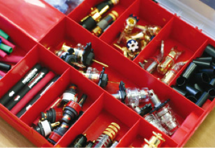
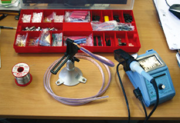

Кабельный центр Подбираете акустический или межблочный кабель? Нужен хороший кабель нестандартной длины? Нужны качественные разъёмы и кабель в нарезку? Нужны консультации по подбору кабелей для стереосистем или домашних кинотеатров? Вы инсталлятор?
Богатый выбор кабельной продукции Кабельный центр Аудиомании готов предоставить огромный выбор готовых акустических и межблочных кабелей, постоянно находящихся в наличии. У нас вы всегда найдёте любые кабели для подключения стереосистем и домашних кинотеатров, а также все необходимые аксессуары, которые позволят вам получить качественный звук и идеальное изображение.

Кабель на прослушивание
Если Вы хотите узнать, как ведёт себя тот или иной кабель
в Вашей системе - возьмите его с собой* и оцените преимущества
и недостатки кабеля непосредственно на вашем оборудовании.
Избавьте себя от необходимости покупать огромное количество
ненужных вам кабелей, чтобы сделать выбор.
* требуется залог в размере 100% стоимости товара.
Изготовление кабелей на заказ В кабельном центре Аудиомании вы можете заказать изготовление межкомпонентных и акустических кабелей нестандартной длины и конфигураций для любых соединений в домашнем кинотеатре, аудио- и видеооборудовании, проекционном оборудовании. Всегда в наличии все необходимые комплектующие. Специалисты кабельного центра всегда рады помочь вам в оптимальном и вместе с тем достойном выборе кабельной продукции.
Стоимость пайки кабеля акустического с сечением от 1,6 до 2,5 мм2 с разъёмом «Банан, Лопатка» 200 Р за 1 разъём
Стоимость обжима кабеля акустического с сечением от 1,6 до 2,5 мм2 с разъёмом «Банан, Лопатка» 150 Р за 1 разъём
Стоимость пайки кабеля акустического с сечением от 3 мм2 с разъёмом «Банан, Лопатка» 250 Р за 1 разъём
Стоимость обжима кабеля акустического с сечением от 3 мм2 с разъёмом «Банан, Лопатка» 220 Р за 1 разъём
Стоимость пайки кабеля межблоного с разъёмом «RCA» 250 Р за 1 разъём
Стоимость пайки кабеля межблоного с разъёмом «XLR» 300 Р за 1 разъём
Стоимость пайки кабеля межблоного с разъёмом «S-Video» 300 Р за 1 разъём
Стоимость обжима кабеля сетевого с разъёмом «Сетевой» 560 Р за 1 разъём
Стоимость обжима с лужением кабеля сетевого с разъёмом «Сетевой» 560 Р за 1 разъём
Стоимость пайки серебросодержащим припоем +10% от стоимости работ
Стоимость пайки золотосодержащим припоем +15% от стоимости работ
Обратите внимание